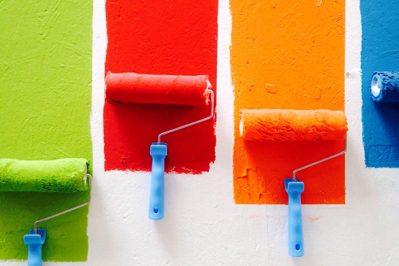

<div class='full' style='background: #f5f5f5'>
    <div class='row'>
        <div class='large-8 columns'>
            <div class='mod modBlogPost big'>
                <div class='images'>
                    <div class='image'>
                        
                    </div>
                </div>
                <div class='content'>
                    <h3>What Are the Most Popular Paint Colors This Year?</h3>
                    <p>The most popular paint colors this year are <a href="https://www.sherwin-williams.com/homeowners/color/find-and-explore-colors/paint-colors-by-family/SW0077-classic-french-gray#/0077/" target="_blank">"Classic Gray"</a> and <a href="https://www.sherwin-williams.com/homeowners/color/find-and-explore-colors/paint-colors-by-family/SW7029-agreeable-gray#/7029/" target="_blank">"Agreeable Gray."</a> Real estate agents are going with
                    "Classic Gray" because it's light and makes the room look bigger. Also, it looks modern with white trim I have to agree
                    it looks fantastic! The last home we painted with this color sold immediately.</p>
                    
                    <p></p>"Agreeable Gray" is a deeper gray, and residential customers love this color for their living room and dining room. It has a calming and warming effect on a place it makes one feel at home. I enjoy this color as well because it looks good
                    and pleases our customers.</p>
                </div>
            </div>
            <div class='two spacing'></div>
        </div>
        <div class='large-4 columns' id='sidebar'>
            {% include sidebar.html %}
        </div>
    </div>
</div>